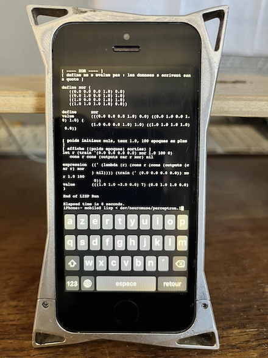

Expérimentation d'idées développées dans neuromuse avec un Lisp maison natif sur iPhone 5s.
L'interpréteur est fondé sur le lisp.c de Gregory J. Chaitin, non inclu ici.
Ce dépôt contient seulement les modifications de l'interpréteur et les exemples :
chaitin-lisp/neuromuse.patch — avec load et nombres décimaux (/ exp log sqrt floor float random seed) nécessaires ajoutées à lisp.cchaitin-lisp/Makefile — applique le patch et compile avec le SDK Theosexamples/*.l — exemple dans le dialecte Lisp de Chaitin (.l, not Common Lisp)cd chaitin-lisp
cp /path/to/chaitin/lisp.c lisp.orig.c
makecd examples
../chaitin-lisp/lisp
load float-test.l| Composant | Statut |
|---|---|
load et floating-point (tested iPhone 5s) |
✓ Done |
perceptron (examples/perceptron.l, port in progress) |
✓ Done |
SOM (examples/som.l, draft, tested on Linux only) |
🚧 Draft |
| perceptron → WAV playback | 📋 Planned |
PolyForm Noncommercial License 1.0.0. This does not cover Chaitin's lisp.c, which is not included.